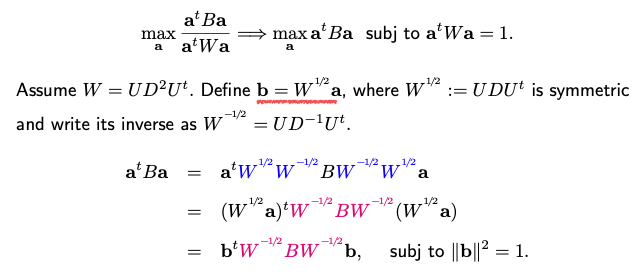

9.5. Fisher Discriminant Analysis
In the context of dimension reduction methods, it’s important to distinguish between unsupervised and supervised techniques.
Unsupervised methods like Principal Component Analysis (PCA) operate solely on the dataset X without any consideration for the labels Y, which may not even exist.
On the other hand, in supervised dimension reduction, we do have access to Y, the class labels. The goal is to find a projection direction such that when we project the data onto it, we obtain one-dimensional values that exhibit clear separation among the classes.
{kind=link}
For instance, consider a scenario where data points are in a two-dimensional space, and they belong to three different classes. We aim to identify the best projection direction that maximizes class separation and the worst one that doesn’t. To achieve this, we first need to define what we mean by “being well-separated.”
Being well-separated implies that the means of the data points from different classes are far apart, while the data points within the same class cluster closely around their respective means. This concept can be expressed mathematically as the maximization of a ratio: the ratio of between-group variation to within-group variation after projection. To compute this ratio, let’s assume the direction we’re seeking is represented as vector \(\mathbf{a} \in \mathbb{R}^p\). After projecting the data onto this direction \(\mathbf{a}\), the ratio can be calculated as a quadratic expression involving matrices B and W.
W represents within-class variation, similar to a pooled sample covariance matrix. It accumulates the variations of each data point from its respective class center and sums them over all K classes. B, on the other hand, signifies between-class covariance, measuring the separation of class centers from each other.
To help understand B and W, consider that every \(x_i\) can be represented as the sum of its own class mean (\(\mu_k\)) and the deviation from its class mean. W captures the variation within the purple points (deviations from class means), while B accounts for the covariance among the blue points (class means).
Maximize the ratio can be turned into a generalized eigenvalue problem. This problem involves maximizing a quadratic function of B subject to a quadratic constraint on \(\mathbf{a}\).
{kind=link}
The solution \(\mathbf{b}\) yields the first eigenvector of the matrix. By repeating this process iteratively, you can extract K-1 directions, where K is the number of classes. It’s important to note that the rank of B is at most K-1, which limits the number of eigenvectors obtainable.
{kind=link}
A key distinction between \(\mathbf{b}\) vectors and \(\mathbf{a}\) vectors lies in their orthogonality. B vectors are eigenvectors and are orthogonal and normalized, with a norm of one. In contrast, a vectors are derived from b vectors through a transformation and are no longer orthogonal to each other. Additionally, their norms are not necessarily one; they can be considered as being orthogonal in a new space defined by the W matrix, where inner products between the vectors are calculated accordingly.
In summary, Fisher’s Discriminant Analysis (FDA) involves formulating and solving a generalized eigenvalue decomposition problem to find K-1 directions that lead to well-separated data when projected. Notably, these K-1 directions span the same subspace as the one obtained in reduced-rank Linear Discriminant Analysis (LDA), providing a valuable connection between the two techniques. This alignment becomes particularly apparent when within-class covariance is identity. In such cases, the eigenvectors of B correspond to the space where class centers lie after removing the mean, establishing the equivalence between FDA and LDA in this scenario.
9.5.1. LDA vs. FDA
Let’s take a moment to compare Linear Discriminant Analysis (LDA) and Fisher’s Discriminant Analysis (FDA).
LDA is a classification method based on the assumption of a common covariance matrix across different classes.
FDA is a supervised dimension reduction technique, and its output consists of directions rather than a classification rule.
An intriguing aspect of these methods is that LDA imposes strict assumptions about the normality of features, while FDA formulates the problem more generally without making specific distributional assumptions. But it turns out that normality assumptions are implicitly embedded in FDA. This implicit inclusion of normality stems from FDA’s reliance on second moments of covariance matrices and centers of the data, which is a characteristic of normal distributions. The parameters of normal distributions involve only means and covariances. In FDA, the within-class covariance matrix assumes that the covariance structure is the same across different classes, which matches the assumption in LDA.
Despite their differences, FDA and LDA share a similarity: the subspaces they produce are equivalent. In fact, in software like R, there isn’t a specific FDA command; you can extract FDA directions from LDA outputs.
Now, let’s delve further into dimension reduction algorithms.
FDA qualifies as a supervised dimension reduction algorithm since it leverages label information, denoted as Y. This differs from Principal Component Analysis (PCA), which is an unsupervised dimension reduction method. In PCA, if you change the labels or add irrelevant high-pigment labels to Y, the PCA directions remain unaffected.
It’s worth noting that FDA, originally designed for classification problems, can also be applied to regression. In regression, the response variable Y is continuous, unlike the discrete labels used in classification. However, you can discretize Y, for instance, by dividing it into quantiles. These quantile-based labels can then be employed for supervised dimension reduction using FDA.
However, when working with FDA, particularly in classification tasks, there’s a risk of overfitting. Let’s illustrate this concern with a simple example:
Imagine six observations, where the first three belong to class one (in blue) and the remaining three to class zero (in red). The features are six-dimensional, although they could be higher-dimensional. The dataset is structured for linear regression with a binary response (1 or 0).
{kind=link}
The goal is to find a regression coefficient vector \(\mathbf{b}\) to predict the response using the design matrix. Given the nature of regression, you can always find such a vector. When you project the data onto this one-dimensional space determined by \(\mathbf{b}\), you obtain one-dimensional values for each observation.
In this specific example, the projection results in a clear separation between the two classes. Class one points project to one, while class zero points project to zero. However, this separation arises not due to meaningful features but because the feature dimension matches the sample size (n). When the feature dimension equals the sample size, you can generate an n-by-n design matrix and find a direction in the n-dimensional space that effectively separates the classes, even if the features are random noise.
In conclusion, it’s essential to be aware of the potential for overfitting in FDA and similar methods, where seemingly impressive separation may be driven by high-dimensional features rather than meaningful patterns in the data.
9.5.2. Some Remedies
To address this problem, there are two common remedies:
- L1 Penalty:
Add L1 regularization to the optimization problem when estimating covariance matrices or their inverses and mean vectors. This encourages sparsity in the estimated parameters.
- Assume Independence:
Assume that the p-dimensional density function is composed of independent components. This implies that the covariance matrix (sigma) becomes diagonal. This approach is known as Naive Bayes and can help address high-dimensional overfitting.